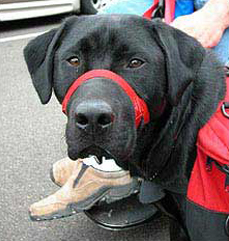

Getting A Dog
Thank you for your interest in applying for an assistance dog through Prison Pet Partnership. At this time, our waitlist for mobility service dogs, seizure response service dogs, personal therapy and facility dogs is at capacity. We are temporarily closing our waitlist and will not be accepting applications from new clients for service or therapy dogs. If you are looking for a service dog, please visit Assistance Dogs International for a list of alternative programs that might meet your needs. You can also continue to check our website for changes or updates to our application status.
Paroled Pets
Prison Pet Partnership has well-trained dogs available for adoption. Please view our adoptable pets at Petfinder.com and download a Paroled Pet Application to get started.